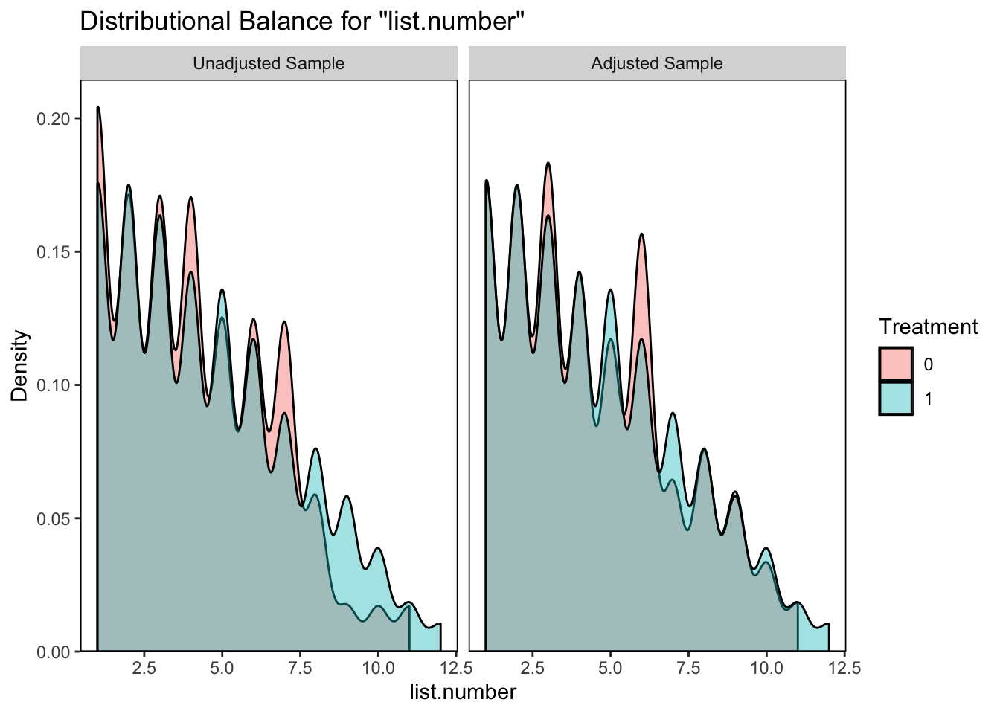
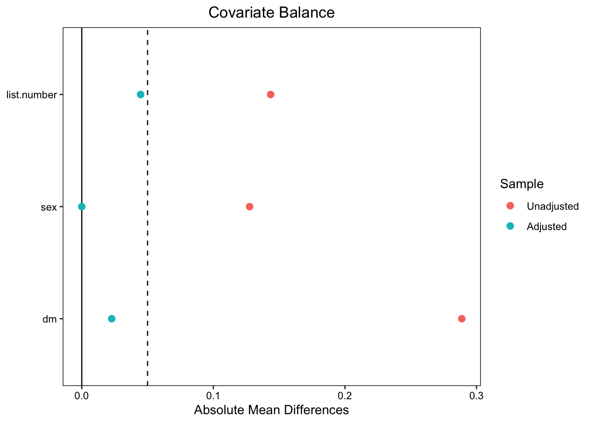
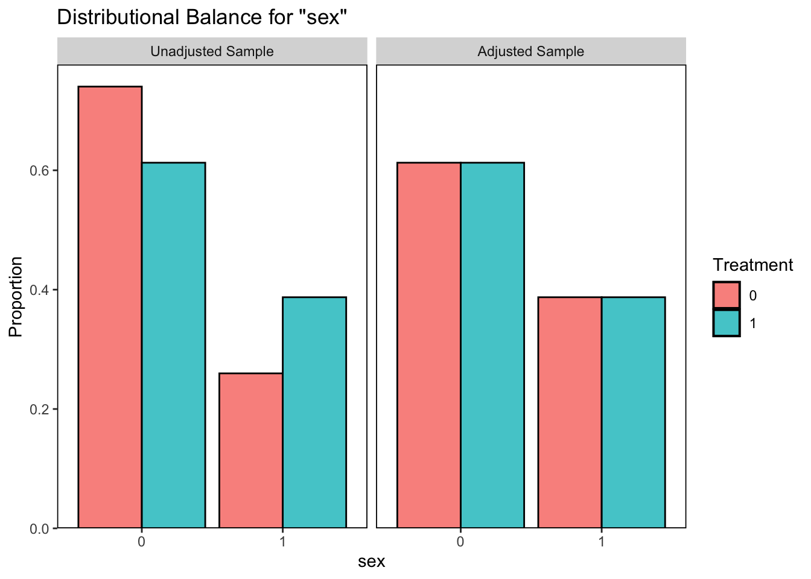
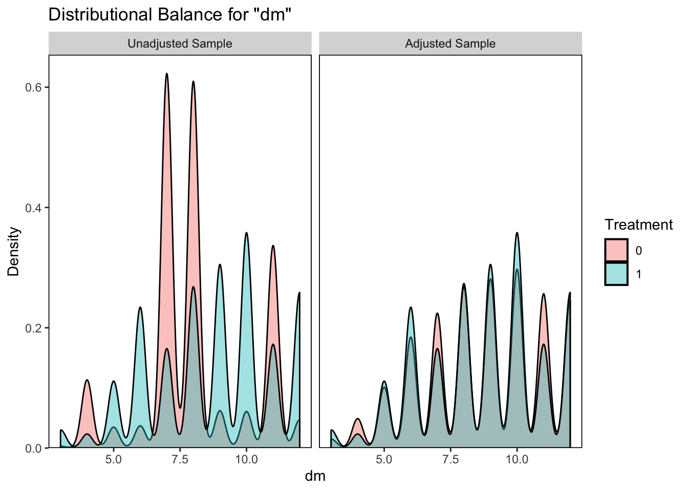

`modelsummary` 2.0.0 now uses `tinytable` as its default table-drawing
backend. Learn more at: https://vincentarelbundock.github.io/tinytable/
Revert to `kableExtra` for one session:
options(modelsummary_factory_default = 'kableExtra')
Change the default backend persistently:
config_modelsummary(factory_default = 'gt')
Silence this message forever:
config_modelsummary(startup_message = FALSE)
library (readxl)data <-read_excel("dprd province.xlsx")data2 <- data %>%group_by(party, constituency) %>%slice(1) %>%ungroup()
# change party namesdata <- data %>%mutate(party =case_when(grepl("Partai Gelombang Rakyat Indonesia", party) ~"Gelora",grepl("Partai Demokrasi Indonesia Perjuangan", party) ~"PDIP",grepl("Partai Golongan Karya", party) ~"Golkar",grepl("Partai NasDem", party) ~"Nasdem",grepl("Partai Demokrat", party) ~"Demokrat",grepl("Partai Kebangkitan Bangsa", party) ~"PKB",grepl("Partai Buruh", party) ~"Buruh",grepl("Partai Gerakan Indonesia Raya", party) ~"Gerindra",grepl("Partai Kebangkitan Nusantara", party) ~"PKN",grepl("Partai Hati Nurani Rakyat", party) ~"Hanura",grepl("Partai Keadilan Sejahtera", party) ~"PKS",grepl("Partai Persatuan Pembangunan", party) ~"PPP",grepl("Partai Amanat Nasional", party) ~"PAN",grepl("Partai Ummat", party) ~"Ummat",grepl("Partai Bulan Bintang", party) ~"PBB",grepl("Partai Solidaritas Indonesia", party) ~"PSI",grepl("PARTAI PERINDO", party) ~"Perindo",grepl("Partai Garda Republik Indonesia", party) ~"Garuda" ))# remove the word 'Dapil' in column 'constituency'data <- data %>%mutate(constituency =gsub("Dapil", "", constituency))# rename column 'sex' if 'LAKI-LAKI' to 'male' and 'PEREMPUAN' to 'female'data <- data %>%mutate(sex =case_when( sex =="LAKI - LAKI"~"male", sex =="PEREMPUAN"~"female",TRUE~as.character(sex) ))# recode 'sex' if 'male' = 0 and 'female' = 1data <- data %>%mutate(sex =ifelse(sex =="male", 0, ifelse(sex =="female", 1, sex)))# set columns 'name', 'constituency', and 'origins' into lowercasesdata <- data %>%mutate(name =tolower(name),origins =tolower(origins),constituency =tolower(constituency))
#count of number of candidates (rows) a party runs in districtdata=data%>%mutate(countinghelp=1)data=data%>%group_by(party, constituency)%>%mutate(numbercandidates =sum(countinghelp))#Check if there is a common difference between dm and numbercandidatesdata=data%>%group_by(party, constituency)%>%mutate(dmnumcandiff = numbercandidates -dm)
#This is the original way to calculate the requisite number of candidates based on the 30% rule - rounding all uproundup30 <-function(x) {ceiling(x) }#this is the modified round down rule if the fraction of 30% is less than .5rounddown30 <-function(x) {ifelse(x -floor(x) <0.5, floor(x), ceiling(x)) }#First calculate 30% of actual candidates a party ran in the districtdata=data%>%mutate(numcand30=numbercandidates*.3)#Next create an expectation for the number of women using original rule of rounding up data=data%>%mutate(numcandup=roundup30(numcand30))#Next create an expectation for the number of women using the new round down ruledata=data%>%mutate(numcandown=rounddown30(numcand30))
# create column 'numwomen' indicating the number of women for each party in each constituencydata <- data %>%group_by(party, constituency) %>%mutate(numwomen =sum (sex ==1, na.rm =TRUE)) %>%ungroup()
# set treatment assignment if it's >= numbcand30data$treatment <-ifelse(data$numwomen >= data$numcand30, 1, 0)
# filter the data for unique 'party' and unique 'constituency'data2 <- data %>%group_by(party, constituency) %>%slice(1) %>%ungroup()# this is going to be our main data
# drop missing values for ATEdata2 <- data %>%filter(!is.na(elected) &!is.na(list.number) &!is.na(sex) &!is.na(dm) &is.finite(elected) &is.finite(list.number) &is.finite(dm))
1. ATE with nearest matching
# estimating propensity scorematch_nearest_dprd <-matchit (treatment ~ list.number + sex + dm, method ="nearest", distance ="mahalanobis", replace =TRUE, data = data2)# create object from the nearest matchingmatched_data_dprd <-match.data(match_nearest_dprd, weights ="weights")
without covariates
# Estimation the ATE on matched data without covariates dprd_model1 <-glm(elected ~ treatment, data = matched_data_dprd, family ="binomial")# estimating the ATE with covariatesdprd_model2 <-glm(elected ~ treatment, data = matched_data_dprd, weights = weights)tidy(dprd_model1)
#Estimation of the ATE on matched data with covariates (doubly robust est)dprd_model3 <-glm(elected ~ treatment + list.number + sex + dm, family ="binomial", data = matched_data_dprd)tidy(dprd_model3)
# estimating the propensity scores using logistic regression dprd_model3_ps <-glm(treatment ~ list.number + sex + dm, family ="binomial", data = data2)# Add the propensity scores to the data framedata2$propensity <-predict(dprd_model3_ps, type ="response") # create IPW in a new object/dataframedata.ipw <- data2 %>%mutate(ipw =ifelse(treatment ==1, 1/ propensity, 1/ (1- propensity)))
without covariates, ipw only
# Estimate the ATE by inverse probabilty weighted regression dprd_model4 <-glm(elected ~ treatment, family="binomial", data = data.ipw, weights = ipw)
Warning in eval(family$initialize): non-integer #successes in a binomial glm!
# Now adjust for doubly robust adjustment with covariatesdprd_model5 <-glm(elected ~ treatment + list.number + sex + dm, family ="binomial", data = data.ipw, weights = ipw)
Warning in eval(family$initialize): non-integer #successes in a binomial glm!
# combining ATE models in one tableall.models.dprd <-list("Match"= dprd_model1, "Match+Cov"= dprd_model3, "IPW"= dprd_model4, "IPW+Cov"= dprd_model5)all.models <-modelsummary(all.models.dprd, coef_rename =c("treatment"="treatment", "list.number"="list number", "sex"="sex"), gof_omit ="AIC|BIC|R2|F", stars =TRUE, title ="The effect of treatment on election")
Warning in eval(family$initialize): non-integer #successes in a binomial glm!
Warning in eval(family$initialize): non-integer #successes in a binomial glm!
all.models
tinytable_fu6xi61kdvdv9t197tjs
The effect of treatment on election
Match
Match+Cov
IPW
IPW+Cov
+ p < 0.1, * p < 0.05, ** p < 0.01, *** p < 0.001
(Intercept)
-2.872***
-1.920***
-2.667***
-1.430***
(0.420)
(0.445)
(0.023)
(0.070)
treatment
0.315
0.343
0.132***
0.126***
(0.420)
(0.434)
(0.031)
(0.033)
list number
-0.604***
-0.613***
(0.017)
(0.012)
sex1
-0.592***
-0.591***
(0.061)
(0.041)
dm
0.126***
0.096***
(0.011)
(0.008)
Num.Obs.
26464
26464
32185
32185
Log.Lik.
-6839.380
-5619.468
-14424.779
-11949.403
RMSE
0.26
0.24
0.26
0.24
4. Naive results
# naive model without adjusting covariate/matching and inverse probabiltynaive_dprd1 <-glm (elected ~ treatment, data = data, family ="binomial")naive_dprd2 <-glm (elected ~ treatment + list.number + sex + dm, data = data, family ="binomial")all.models.dprd.naive <-list("Without covariates"= naive_dprd1, "With covariates"= naive_dprd2)modelsummary(all.models.dprd.naive, gof_omit ="AIC|BIC|F", stars =TRUE, title ="Logistic regression (bias results)")
Call:
matchit(formula = treatment ~ list.number + sex + dm, data = data2,
method = "nearest", distance = "mahalanobis", replace = TRUE)
Summary of Balance for All Data:
Means Treated Means Control Std. Mean Diff. Var. Ratio eCDF Mean
list.number 4.5253 4.1288 0.1435 1.2647 0.0330
sex0 0.6127 0.7403 -0.2619 . 0.1276
sex1 0.3873 0.2597 0.2619 . 0.1276
dm 8.7063 8.0583 0.2888 1.3761 0.0910
eCDF Max
list.number 0.0768
sex0 0.1276
sex1 0.1276
dm 0.3051
Summary of Balance for Matched Data:
Means Treated Means Control Std. Mean Diff. Var. Ratio eCDF Mean
list.number 4.5253 4.4018 0.0447 1.0773 0.0103
sex0 0.6127 0.6127 0.0000 . 0.0000
sex1 0.3873 0.3873 -0.0000 . 0.0000
dm 8.7063 8.7574 -0.0227 0.9954 0.0100
eCDF Max Std. Pair Dist.
list.number 0.0342 0.0545
sex0 0.0000 0.0000
sex1 0.0000 0.0000
dm 0.0366 0.0445
Sample Sizes:
Control Treated
All 5833. 26352
Matched (ESS) 78.07 26352
Matched 112. 26352
Unmatched 5721. 0
Discarded 0. 0
5. Balance plots
# Using bal.plot() to visualize balance for 'usia'bal.plot(match_nearest_dprd, which ="both", main ="Balance Plot for Age (Usia) Before and After Matching")
No `var.name` was provided. Displaying balance for list.number.

# Generating a Love plot to visualize balance for all covariateslove.plot(match_nearest_dprd, which ="both", threshold =0.05, abs =TRUE,main ="Love Plot Showing Standardized Mean Differences")
Warning: Standardized mean differences and raw mean differences are present in the same plot.
Use the `stars` argument to distinguish between them and appropriately label the x-axis.

# Not to self, not yet accounting the balance for IPW to see which one is better and meet the assumptions
6. All balance plots
# Balance plot foro 'sex'bal.plot(match_nearest_dprd, var.name ="sex", which ="both", main ="Balance for sex")

# Balance plot for 'list.number'bal.plot(match_nearest_dprd, var.name ="list.number", which ="both", main ="Balance for list.number")
# Balance plot for 'dm'bal.plot(match_nearest_dprd, var.name ="dm", which ="both", main ="Balance for district magnitude")

# Balance plot for IPW
run the same model with dataset is stricted to women
data_fem <-read_excel("dprd province.xlsx")
# change party namesdata_fem <- data_fem %>%mutate(party =case_when(grepl("Partai Gelombang Rakyat Indonesia", party) ~"Gelora",grepl("Partai Demokrasi Indonesia Perjuangan", party) ~"PDIP",grepl("Partai Golongan Karya", party) ~"Golkar",grepl("Partai NasDem", party) ~"Nasdem",grepl("Partai Demokrat", party) ~"Demokrat",grepl("Partai Kebangkitan Bangsa", party) ~"PKB",grepl("Partai Buruh", party) ~"Buruh",grepl("Partai Gerakan Indonesia Raya", party) ~"Gerindra",grepl("Partai Kebangkitan Nusantara", party) ~"PKN",grepl("Partai Hati Nurani Rakyat", party) ~"Hanura",grepl("Partai Keadilan Sejahtera", party) ~"PKS",grepl("Partai Persatuan Pembangunan", party) ~"PPP",grepl("Partai Amanat Nasional", party) ~"PAN",grepl("Partai Ummat", party) ~"Ummat",grepl("Partai Bulan Bintang", party) ~"PBB",grepl("Partai Solidaritas Indonesia", party) ~"PSI",grepl("PARTAI PERINDO", party) ~"Perindo",grepl("Partai Garda Republik Indonesia", party) ~"Garuda" ))# remove the word 'Dapil' in column 'constituency'data_fem <- data_fem %>%mutate(constituency =gsub("Dapil", "", constituency))# rename column 'sex' if 'LAKI-LAKI' to 'male' and 'PEREMPUAN' to 'female'data_fem <- data_fem %>%mutate(sex =case_when( sex =="LAKI - LAKI"~"male", sex =="PEREMPUAN"~"female",TRUE~as.character(sex) ))# recode 'sex' if 'male' = 0 and 'female' = 1data_fem <- data_fem %>%mutate(sex =ifelse(sex =="male", 0, ifelse(sex =="female", 1, sex)))# set columns 'name', 'constituency', and 'origins' into lowercasesdata_fem <- data_fem %>%mutate(name =tolower(name),origins =tolower(origins),constituency =tolower(constituency))#count of number of candidates (rows) a party runs in districtdata_fem=data_fem%>%mutate(countinghelp=1)data_fem=data_fem%>%group_by(party, constituency)%>%mutate(numbercandidates =sum(countinghelp))#Check if there is a common difference between dm and numbercandidatesdata_fem=data_fem%>%group_by(party, constituency)%>%mutate(dmnumcandiff = numbercandidates -dm)#This is the original way to calculate the requisite number of candidates based on the 30% rule - rounding all uproundup30 <-function(x) {ceiling(x) }#this is the modified round down rule if the fraction of 30% is less than .5rounddown30 <-function(x) {ifelse(x -floor(x) <0.5, floor(x), ceiling(x)) }#First calculate 30% of actual candidates a party ran in the districtdata_fem=data_fem%>%mutate(numcand30=numbercandidates*.3)#Next create an expectation for the number of women using original rule of rounding up data_fem=data_fem%>%mutate(numcandup=roundup30(numcand30))#Next create an expectation for the number of women using the new round down ruledata_fem=data_fem%>%mutate(numcandown=rounddown30(numcand30))# create column 'numwomen' indicating the number of women for each party in each constituencydata_fem <- data_fem %>%group_by(party, constituency) %>%mutate(numwomen =sum (sex ==1, na.rm =TRUE)) %>%ungroup()# set treatment assignment if it's >= numbcand30data_fem$treatment <-ifelse(data_fem$numwomen >= data_fem$numcand30, 1, 0)# filter to female onlydata_fem <- data_fem %>%filter(sex ==1) # drop missing values for ATEdata_fem <- data_fem %>%filter(!is.na(elected) &!is.na(list.number) &!is.na(sex) &!is.na(dm) &is.finite(elected) &is.finite(list.number) &is.finite(dm))
A. ATE with nearest neighboor
# estimating propensity scorematch_nearest_dprd_fem <-matchit (treatment ~ list.number + dm, method ="nearest", distance ="mahalanobis", replace =TRUE, data = data_fem)# create object from the full matchingmatched_data_dprd_fem <-match.data(match_nearest_dprd_fem, weights ="weights")
without covariates
# Estimation the ATE on matched data without covariates dprd_model1_fem <-glm(elected ~ treatment, data = matched_data_dprd_fem, family ="binomial")# estimating the ATE with covariatesdprd_model2_fem <-glm(elected ~ treatment, data = matched_data_dprd_fem, weights = weights)tidy(dprd_model1_fem)
#Estimation of the ATE on matched data with covariates (doubly robust est)dprd_model3_fem <-glm(elected ~ treatment + list.number + dm, family ="binomial", data = matched_data_dprd_fem)
B. ATE using IPW
# estimating the propensity scores using logistic regression dprd_model3_ps_fem <-glm(treatment ~ list.number + dm, family ="binomial", data = data_fem)# Add the propensity scores to the data framedata_fem$propensity <-predict(dprd_model3_ps_fem, type ="response") # create IPW in a new object/dataframedata_fem.i <-augment_columns(dprd_model3_ps_fem, data = data_fem,type.predict ="response") %>%mutate(ipw = (treatment / propensity) + ((1- treatment) / (1- propensity)))
without covariates, ipw only
# Estimate the ATE by inverse probabilty weighted regression dprd_model4_fem <-glm(elected ~ treatment, family="binomial", data = data_fem.i, weights = ipw)
Warning in eval(family$initialize): non-integer #successes in a binomial glm!
library(broom)# Now adjust for doubly robust adjustment with covariates# Re-fit the modeldprd_model5_fem <-glm(elected ~ treatment + list.number + dm, family ="binomial", data = data_fem.i, weights = ipw)
Warning in eval(family$initialize): non-integer #successes in a binomial glm!
# Tidy the model output with confidence intervalstidy_output <-tidy(dprd_model5_fem, conf.int =TRUE)
Warning in eval(family$initialize): non-integer #successes in a binomial glm!
Warning in eval(family$initialize): non-integer #successes in a binomial glm!
Warning in eval(family$initialize): non-integer #successes in a binomial glm!
Warning in eval(family$initialize): non-integer #successes in a binomial glm!
Warning in eval(family$initialize): non-integer #successes in a binomial glm!
Warning in eval(family$initialize): non-integer #successes in a binomial glm!
Warning in eval(family$initialize): non-integer #successes in a binomial glm!
Warning in eval(family$initialize): non-integer #successes in a binomial glm!
Warning in eval(family$initialize): non-integer #successes in a binomial glm!
Warning in eval(family$initialize): non-integer #successes in a binomial glm!
Warning in eval(family$initialize): non-integer #successes in a binomial glm!
Warning in eval(family$initialize): non-integer #successes in a binomial glm!
Warning in eval(family$initialize): non-integer #successes in a binomial glm!
Warning in eval(family$initialize): non-integer #successes in a binomial glm!
Warning in eval(family$initialize): non-integer #successes in a binomial glm!
Warning in eval(family$initialize): non-integer #successes in a binomial glm!
Warning in eval(family$initialize): non-integer #successes in a binomial glm!
Warning in eval(family$initialize): non-integer #successes in a binomial glm!
Warning in eval(family$initialize): non-integer #successes in a binomial glm!
Warning in eval(family$initialize): non-integer #successes in a binomial glm!
Warning in eval(family$initialize): non-integer #successes in a binomial glm!
Warning in eval(family$initialize): non-integer #successes in a binomial glm!
Warning in eval(family$initialize): non-integer #successes in a binomial glm!
Warning in eval(family$initialize): non-integer #successes in a binomial glm!
Warning in eval(family$initialize): non-integer #successes in a binomial glm!
Warning in eval(family$initialize): non-integer #successes in a binomial glm!
Warning in eval(family$initialize): non-integer #successes in a binomial glm!
Warning in eval(family$initialize): non-integer #successes in a binomial glm!
Warning in eval(family$initialize): non-integer #successes in a binomial glm!
Warning in eval(family$initialize): non-integer #successes in a binomial glm!
Warning in eval(family$initialize): non-integer #successes in a binomial glm!
Warning in eval(family$initialize): non-integer #successes in a binomial glm!
Warning in eval(family$initialize): non-integer #successes in a binomial glm!
Warning in eval(family$initialize): non-integer #successes in a binomial glm!
Warning in eval(family$initialize): non-integer #successes in a binomial glm!
Warning in eval(family$initialize): non-integer #successes in a binomial glm!
Warning in eval(family$initialize): non-integer #successes in a binomial glm!
Warning in eval(family$initialize): non-integer #successes in a binomial glm!
Warning in eval(family$initialize): non-integer #successes in a binomial glm!
Warning in eval(family$initialize): non-integer #successes in a binomial glm!
Warning in eval(family$initialize): non-integer #successes in a binomial glm!
Warning in eval(family$initialize): non-integer #successes in a binomial glm!
Warning in eval(family$initialize): non-integer #successes in a binomial glm!
Warning in eval(family$initialize): non-integer #successes in a binomial glm!
# combining ATE models in one tableall.models.dprd_fem <-list("Match"= dprd_model1_fem, "Match+Cov"= dprd_model3_fem, "IPW"= dprd_model4_fem, "IPW+Cov"= dprd_model5_fem)all.models_fem <-modelsummary(all.models.dprd_fem, coef_rename =c("treatment"="treatment", "list.number"="list number", "sex"="sex"), gof_omit ="AIC|BIC|R2|F", stars =TRUE, title ="The effect of treatment on election")
Warning in eval(family$initialize): non-integer #successes in a binomial glm!
Warning in eval(family$initialize): non-integer #successes in a binomial glm!
all.models_fem
tinytable_5ihppens40kuot75ygjj
The effect of treatment on election
Match
Match+Cov
IPW
IPW+Cov
+ p < 0.1, * p < 0.05, ** p < 0.01, *** p < 0.001
(Intercept)
-3.114***
-1.870*
-3.516***
-0.790***
(0.723)
(0.776)
(0.056)
(0.176)
treatment
-0.117
0.510
0.319***
0.024
(0.725)
(0.749)
(0.073)
(0.079)
list number
-0.950***
-1.176***
(0.048)
(0.039)
dm
0.128***
0.112***
(0.023)
(0.018)
Num.Obs.
10253
10253
11721
11721
Log.Lik.
-1657.454
-1281.349
-3159.819
-2341.618
RMSE
0.19
0.18
0.19
0.18
D. Naive results
library (modelsummary)# naive model without adjusting covariate/matching and inverse probabiltynaive_dprd1_fem <-glm (elected ~ treatment, data = data_fem, family ="binomial")naive_dprd2_fem <-glm (elected ~ treatment + list.number + dm, data = data_fem, family ="binomial")all.models.dprd.naive_fem <-list("Without covariates"= naive_dprd1_fem, "With covariates"= naive_dprd2_fem)modelsummary(all.models.dprd.naive_fem, gof_omit ="AIC|BIC|F", stars =TRUE, title ="Logistic regression (bias results)")